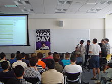

Events
Hackathon
Hakaton (takođe poznat kao hack dai, hackfest, datathon ili codefest; portmanto hakerskog maratona) je događaj sličan dizajnu sprinta, na kojem često kompjuterski programeri i drugi uključeni u razvoj softvera, uključujući grafičke dizajnere, dizajnere interfejsa, proizvode menadžeri, menadžeri projekata, stručnjaci za domene i drugi intenzivno sarađuju na softverskim projektima.
Cilj hakatona je stvaranje funkcionalnog softvera ili hardvera do kraja događaja. Hakatoni obično imaju specifičan fokus, koji može uključivati korišćeni programski jezik, operativni sistem, aplikaciju, API ili predmet i demografsku grupu programera. U drugim slučajevima, nema ograničenja za tip softvera koji se kreira.